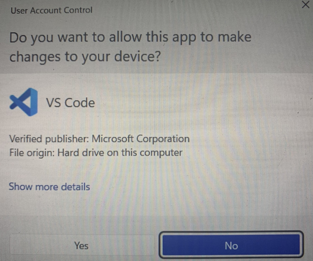
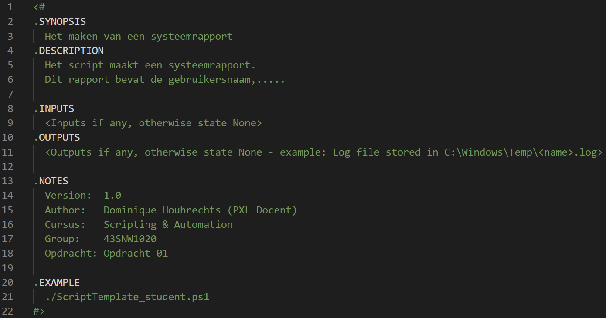
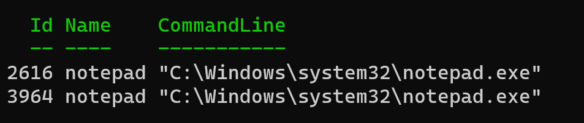

Deel 1 — Introductie en installatie
1. Waarom scripting?
Leg in je eigen woorden uit waarom scripting nuttig is voor systeem- en netwerkbeheer. Geef minstens vier concrete voordelen of toepassingsgebieden.
Mijn antwoord:
Ik vind scripting nuttig voor systeem- en netwerkbeheer omdat wij repititieve taken moeten kunnen automatiseren.
Het automatiseren van taken kan ons in de praktijk zeer veel tijd besparen.
Het verkleint de kans op menselijke fouten aanzienlijk omdat het script - na het uitvoeren van grondige testen - altijd hetzelfde restultaat zal opleveren.
Het uitvoeren van wekelijkse of maandelijkse updates op een groot aantal computers kan met een script in een enkele minuten doorgevoerd worden, wanneer je dit handmatig zou doen, kan dit uren in beslag nemen.
Maar ook het wekelijks of soms dagelijks maken van back-ups kan met een script geautomatiseerd worden.
Geavanceerd Antwoord:
Uitgebreider antwoord volgens de Course (
Why automation? / Why scripting?):
- Efficiëntie en snelheid: een script voert een taak sneller uit dan iemand die dezelfde stappen met de hand doet.
- Consistentie en nauwkeurigheid: een getest script doet elke keer exact hetzelfde, dus minder menselijke fouten.
- Schaalbaarheid: hetzelfde script werkt voor 1 of voor 250 computers, zonder veel extra werk.
- 24/7 beschikbaar: een script kan op elk moment draaien, bv. 's nachts een back-up maken.
- Risicovermindering: scripts kunnen beveiligingsregels afdwingen en regelmatig back-ups maken.
- Minder herhalend werk: de beheerder houdt tijd over voor belangrijkere taken.
Toepassingsgebieden uit de Course: servers en clients, virtuele machines en containers, netwerken en netwerkapparaten, besturingssystemen en software-installaties.
Infrastructure as Code (IaC): je beschrijft en beheert je infrastructuur met code in plaats van met de hand.
Let op (hands-on 01): automatiseren is pas zinvol als een taak herhaald wordt, duidelijke regels volgt en veilig te controleren is.
2. Pakketbeheerders
2.1 Wat is een pakketbeheerder?
Omschrijf wat een pakketbeheerder is en welke taken deze voor de gebruiker automatiseert.
Mijn antwoord:
Een pakketbeheerder is een softwareprogramma waarmee je softwarepakketten kunt downloaden en installeren.
Het voordeel hieraan is dat je niet op zoek moet gaan op het internet naar de correcte versie van de software en dat je weet dat je altijd een veilige en correcte versie van de software download.
Geavanceerd Antwoord:
Een pakketbeheerder (
Package Manager) is een tool die software-installaties automatiseert. Volgens de Course kan je ermee:
- software installeren;
- software eenvoudig bijwerken (upgrade);
- geïnstalleerde software eenvoudig verwijderen;
- veel configuratiemogelijkheden gebruiken.
Het belangrijkste voordeel voor automatisering: een pakketbeheerder
werkt in scripts. Voorbeelden uit de Course:
winget, Chocolatey en Scoop.
2.2 Waarom gebruik je een pakketbeheerder?
Geef minstens drie voordelen ten opzichte van handmatig software downloaden en installeren.
Mijn antwoord:
1. Alle softwarepakketten vind je op een plaats.
2. Alle softwarepakketten zijn veilig en je weet dat je het niet download via een onbetrouwbare bron.
3. De pakketbeheerder zorgt voor automatische updates en beheer van de geïnstalleerde software.
Geavanceerd Antwoord:
- Handiger dan zelf zoeken, downloaden en doorklikken.
- Installeren, bijwerken en verwijderen gaan allemaal met één soort commando, bv.
winget install, winget upgrade en winget uninstall.
- Je kan het in een script zetten: zo installeer je dezelfde software automatisch op veel computers.
- Je zoekt eerst met
winget search en installeert dan exact het juiste pakket met --id.
2.3 Installeer software met een pakketbeheerder
Zoek en installeer de volgende software. Noteer voor elk pakket welke pakketbeheerder en welke commando's je gebruikte.
2.3.1 PowerShell 7.x
Mijn antwoord:
winget install --id Microsoft.PowerShell --exact --source winget
Geavanceerd Antwoord:
Werkwijze uit de Course (How-to: PowerShell setup), in een terminal als administrator:
winget search --id Microsoft.PowerShell → zoek de laatste stabiele versie
winget install --id Microsoft.PowerShell --source winget --installer-type wix
--installer-type wix kiest de MSI-versie in plaats van de Store-versie (aanbevolen voor beheerstaken, bv. Set-ExecutionPolicy -Scope LocalMachine werkt niet in de Store-versie).
Controle (nieuwe terminal openen): pwsh en daarna $PSVersionTable.PSVersion → versie 7.x
Let op: de id moet exact Microsoft.PowerShell zijn. Met een tikfout in de id vindt winget het pakket niet.
2.3.2 Windows Terminal
Mijn antwoord:
winget install --id Microsoft.WindowsTerminal --exact --source winget
Geavanceerd Antwoord:
winget search --id Microsoft.WindowsTerminal
winget install --id Microsoft.WindowsTerminal --exact --source winget
Controle (How-to: Windows Terminal setup): open Windows Terminal, kies met het pijltje naast de nieuwe-tab-knop het profiel PowerShell (niet Windows PowerShell) en voer $PSVersionTable.PSVersion uit → versie 7.x.
2.3.3 Visual Studio Code
Mijn antwoord:
winget install --id Microsoft.VisualStudioCode --exact --source winget
Geavanceerd Antwoord:
winget install --id Microsoft.VisualStudioCode --exact --source winget
Controle (How-to: VS Code setup), na het herstarten van PowerShell:
code --version → toont de geïnstalleerde versie van VS Code
De PowerShell-extensie kan je meteen mee installeren vanuit PowerShell:
code --install-extension ms-vscode.PowerShell
2.3.4 Een Windows-versie van het Linux-commando grep
Mijn antwoord:
winget install --id GnuWin32.Grep --exact --source winget
Geavanceerd Antwoord:
Eerst zoeken, dan pas installeren:
winget search grep → in de lijst staat o.a. GnuWin32.Grep
winget install --id GnuWin32.Grep --exact --source winget
Controle met Get-Command (Course, hoofdstuk 01): Get-Command grep
Vindt PowerShell het programma, dan toont Source het pad naar grep.exe. Krijg je een fout, dan staat de map van grep niet in je PATH en moet je het volledige pad gebruiken.
Alternatief: BusyBox (2.3.5) bevat ook een grep: busybox grep.
2.3.5 BusyBox
Mijn antwoord:
winget install --id frippery.busybox-w32 --exact --source winget
Geavanceerd Antwoord:
winget search busybox → de juiste id is frippery.busybox-w32
winget install --id frippery.busybox-w32 --exact --source winget
Let op: frippery.busybox (zonder -w32) bestaat niet in winget. Gebruik dezelfde id ook voor de update in 2.3.6.
Alternatief uit de Course (Linux Commands in Windows) met Scoop:
scoop search busybox
scoop install busybox
Controle: Get-Command busybox → toont waar busybox.exe staat.
2.3.6 Hoe werk je BusyBox bij?
Mijn antwoord:
winget upgrade --id frippery.busybox-w32 --source winget
Geavanceerd Antwoord:
Eerst bekijken welke updates er zijn:
winget upgrade → lijst van alle geïnstalleerde pakketten waarvoor een nieuwere versie bestaat
Daarna alleen BusyBox bijwerken:
winget upgrade --id frippery.busybox-w32 --source winget
Dit is dezelfde werkwijze als in de Course voor PowerShell: winget upgrade --id Microsoft.PowerShell.
3. PowerShell-versie
Mijn antwoord:
$PSVersionTable.PSVersion
Geavanceerd Antwoord:
$PSVersionTable.PSVersion → alleen het versienummer
$PSVersionTable.PSEdition → Core (PowerShell 7) of Desktop (Windows PowerShell 5.1)
$PSVersionTable is een automatische variabele, geen cmdlet (hands-on 01). Met de punt (.PSVersion) vraag je één onderdeel op.
3.1 Toon de PowerShell-versie in je huidige sessie
Voer een commando uit dat de volledige PowerShell-versietabel toont.
Mijn antwoord:
$PSVersionTable
Geavanceerd Antwoord:
$PSVersionTable → toont o.a. PSVersion, PSEdition, OS en Platform.
Dezelfde variabele opvragen met een cmdlet (hands-on 01):
Get-Variable -Name PSVersionTable
Noteer je versie en editie wanneer je hulp vraagt: andere versies kunnen andere cmdlets en parameters hebben.
3.2 Zoek andere manieren om de versie op te vragen
Geef minstens twee alternatieven. Vergelijk kort welke informatie ze tonen.
Mijn antwoord:
Get-Host
pwsh --version
Vergelijking: Get-Host toont informatie over het hostprogramma waarin PowerShell draait (o.a. Name en Version). pwsh --version toont alleen de versie van de geïnstalleerde PowerShell 7, bv. PowerShell 7.6.10. $PSVersionTable toont de meeste informatie (versie, editie, besturingssysteem).
Geavanceerd Antwoord:
Vergelijking
$PSVersionTable.PSVersion → de versie van PowerShell in je huidige sessie.
Get-Host → informatie over het hostprogramma waarin PowerShell draait (Name, Version, taal...). In een gewone terminal is dat dezelfde versie, maar in de PowerShell-extensie van VS Code toont Get-Host de versie van die extensie. Alleen het versienummer: (Get-Host).Version
pwsh --version → start het programma pwsh en toont bv. PowerShell 7.6.10: de geïnstalleerde PowerShell 7, ook als je zelf in Windows PowerShell 5.1 werkt.
Conclusie: $PSVersionTable is de betrouwbaarste manier voor je huidige sessie.
4. PowerShell execution policies
Opgelet: Voor wijzigingen op LocalMachine zijn beheerdersrechten nodig. Verlaag de beveiliging niet zonder toestemming van de docent. Gebruik bij voorkeur RemoteSigned en herstel de oorspronkelijke instelling na de oefening.
4.1 Controleer de actieve execution policy
Mijn antwoord:
Get-ExecutionPolicy
Geavanceerd Antwoord:
Geen echt geavanceerd antwoord nodig: Get-ExecutionPolicy toont de geldende policy van je huidige sessie.
Optioneel: Get-Help Get-ExecutionPolicy -Examples
4.2 Toon de execution policies voor alle scopes
Neem minstens MachinePolicy, UserPolicy, Process, CurrentUser en LocalMachine op in je antwoord.
Mijn antwoord:
Get-ExecutionPolicy -List
Geavanceerd Antwoord:
Get-ExecutionPolicy -List
Betekenis van de scopes (Course):
MachinePolicy: ingesteld via Group Policy voor alle gebruikers van de computer.UserPolicy: ingesteld via Group Policy voor de huidige gebruiker.Process: alleen voor de huidige PowerShell-sessie (verdwijnt als je het venster sluit).CurrentUser: alleen voor de huidige gebruiker.LocalMachine: standaardscope, voor alle gebruikers van de computer.
Undefined betekent dat er op die scope niets ingesteld is. De bovenste scope met een waarde wint; een school of werkgever kan zo via
MachinePolicy of
UserPolicy een policy afdwingen.
4.3 Stel de policy voor LocalMachine in
Met welk commando stel je de execution policy voor de scope LocalMachine in op RemoteSigned? Hoe zou het commando voor Unrestricted eruitzien?
Mijn antwoord:
# RemoteSigned
Set-ExecutionPolicy -ExecutionPolicy RemoteSigned -Scope LocalMachine
# Unrestricted
Set-ExecutionPolicy -ExecutionPolicy Unrestricted -Scope LocalMachine
Geavanceerd Antwoord:
Vooraf: noteer de huidige instelling met Get-ExecutionPolicy -List, zodat je ze nadien kan herstellen. Voor LocalMachine moet PowerShell als administrator draaien.
Set-ExecutionPolicy -ExecutionPolicy RemoteSigned -Scope LocalMachine
Set-ExecutionPolicy -ExecutionPolicy Unrestricted -Scope LocalMachine
Get-ExecutionPolicy -List → controle
Veiliger alternatief uit de Course (How-to: PowerShell setup): alleen voor de huidige sessie, zonder beheerdersrechten:
Set-ExecutionPolicy -Scope Process -ExecutionPolicy RemoteSigned
Deze instelling verdwijnt zodra je het PowerShell-venster sluit.
Een execution policy is geen echte beveiligingsgrens: ze voorkomt vooral dat je per ongeluk een script uitvoert.
4.4 Zoek help over execution policies
Gebruik het PowerShell-helpsysteem om algemene informatie en gedetailleerde cmdlet-informatie te vinden.
Mijn antwoord:
Algemene informatie: Get-Help about_Execution_Policies
Gedetailleerde cmdlet-informatie: Get-Help Set-ExecutionPolicy -Detailed
Geavanceerd Antwoord:
Algemene informatie (een about-onderwerp):
Get-Help about_Execution_Policies
Of zoeken met een deel van de naam (wildcards, Course): Get-Help execution_pol
Gedetailleerde informatie over de cmdlets:
Get-Help Set-ExecutionPolicy -Detailed
Get-Help Set-ExecutionPolicy -Full
Get-Help Get-ExecutionPolicy -Examples
Krijg je weinig tekst te zien, werk dan eerst de help bij (als administrator): Update-Help
4.5 Zoek help over één parameter
Welke parameter van Get-Help gebruik je om alleen informatie over de parameter ExecutionPolicy van Set-ExecutionPolicy te tonen?
Mijn antwoord:
Get-Help Set-ExecutionPolicy -Parameter ExecutionPolicy
Geavanceerd Antwoord:
Geen echt geavanceerd antwoord nodig: -Parameter is de juiste parameter.
Optioneel, dezelfde werkwijze voor de andere parameter die je in 4.3 gebruikte:
Get-Help Set-ExecutionPolicy -Parameter Scope
In de uitvoer zie je o.a. Required? (verplicht of niet) en Position? (mag je de naam weglaten).
5. PowerShell gebruiken in Visual Studio Code
Zorg ervoor dat je PowerShell-scripts kunt schrijven en uitvoeren in Visual Studio Code.
Tip: Zoek naar een geschikte extensie in de Extensions-weergave van Visual Studio Code.
Noteer welke extensie je installeerde en hoe je controleerde dat ze werkt.
Mijn antwoord:
Extensie: PowerShell
In naam.ps1 heb ik op twee aparte regels $PSVersionTable.PSVersion en Write-Host "Succesvol" getypt.
Daarna heb ik op F5 gedrukt en de output van het script was te zien in de Terminal van VS Code.
Geavanceerd Antwoord:
Extensie installeren vanuit PowerShell (How-to: VS Code setup):
code --install-extension ms-vscode.PowerShell
Controleren dat VS Code PowerShell 7 gebruikt:
$PSVersionTable.PSVersion → versie begint met 7
$PSVersionTable.PSEdition → Core
Toont het 5.1 / Desktop, kies dan via Ctrl+Shift+P → PowerShell: Show Session Menu → PowerShell (x64).
Handige sneltoetsen: F5 voert het hele script uit, F8 voert alleen de selectie uit, Ctrl+` opent of sluit de terminal.
6. Eerste script: Naam.ps1
Maak Naam.ps1 in scripts - ps-01-ext-lab/. Het script vraagt geen invoer en toont je naam en woonplaats.
Voorbeeld:
PS> & ".\scripts - ps-01-ext-lab\Naam.ps1"
Naam: Dominique Houbrechts
Woonplaats: Kortessem
6.1 Voer het script op twee manieren uit
Voer het script uit:
- in een command shell, bijvoorbeeld Windows Terminal;
- vanuit Visual Studio Code.
Mijn antwoord:
Inhoud van Naam.ps1:
Write-Host "Naam: Angelo Switon"
Write-Host "Woonplaats: Hasselt"
1. In Windows Terminal: & ".\scripts - ps-01-ext-lab\Naam.ps1"
2. In Visual Studio Code: het bestand openen en op F5 drukken.
Geavanceerd Antwoord:
scripts - ps-01-ext-lab/Naam.ps1
Write-Output 'Naam: Angelo Switon'
Write-Output 'Woonplaats: Hasselt'
1. In Windows Terminal (vanuit de map
ps-01-ext-lab):
& '.\scripts - ps-01-ext-lab\Naam.ps1'
De mapnaam bevat spaties, daarom staat het pad tussen aanhalingstekens met
& ervoor.
2. In Visual Studio Code: open het bestand en druk op
F5 (of de Play-knop). Met
F8 voer je alleen de geselecteerde regel(s) uit.
Let op: zet de tekst op dezelfde regel als
Write-Host of
Write-Output. Staat
Write-Host alleen op een regel, dan toont het een lege regel en wordt de tekst eronder als aparte opdracht getoond.
6.2 Hernoem het script
Hernoem Naam.ps1 naar Mijn Naam.ps1 en voer het opnieuw uit vanuit Windows Terminal en Visual Studio Code. Noteer waarom je het pad anders moet invoeren wanneer de bestandsnaam een spatie bevat.
Mijn antwoord:
1. Rename-Item .\Naam.ps1 "Mijn Naam.ps1"
2. .\"Mijn Naam.ps1"
Waarom een andere invoer: PowerShell gebruikt de spatie om een commando en zijn argumenten te scheiden. Zonder aanhalingstekens ziet PowerShell .\Mijn als het commando en Naam.ps1 als argument, en .\Mijn bestaat niet. Met aanhalingstekens wordt de naam één geheel.
Geavanceerd Antwoord:
Rename-Item -Path '.\scripts - ps-01-ext-lab\Naam.ps1' -NewName 'Mijn Naam.ps1'
& '.\scripts - ps-01-ext-lab\Mijn Naam.ps1'
Waarom anders invoeren?
PowerShell gebruikt de spatie om een commando en zijn argumenten te scheiden. Zonder aanhalingstekens leest PowerShell .\Mijn als commando en Naam.ps1 als argument, en dat commando bestaat niet.
Met aanhalingstekens wordt het pad één geheel, maar dan is het gewoon tekst: PowerShell toont die tekst alleen. De call operator & zegt: "voer dit uit". Zo staat het ook in de Course: & '.\Hello World with spaces.ps1'.
.\"Mijn Naam.ps1" werkt ook: omdat de opdracht met .\ begint, ziet PowerShell het als een pad om uit te voeren. Alleen "Mijn Naam.ps1" zonder .\ of & zou gewoon tekst tonen.
In VS Code verandert er niets: F5 werkt gewoon.
Tip uit de Course: spaties in bestandsnamen zijn bijna altijd een slecht idee.
7. Visual Studio Code starten als administrator
Maak twee snelkoppelingen waarmee je Visual Studio Code als administrator kunt starten zonder bij elke start de volgende UAC-melding te krijgen.

Wijzig de aanbevolen instelling van User Account Control niet.

Beschrijf de gekozen werkwijze en test beide snelkoppelingen.
Mijn antwoord:
Stap 1 - Geplande taak maken:
General tab
- Create Task,
- Name: VSCode-Admin,
- Aanvinken: Run with highest privileges,
Actions tab
- New, Browse: C:\Users\12501999\AppData\Local\Programs\Microsoft VS Code\Code.exe
Conditions tab
- Uitvinken: Start the task only if the computer is on AC Power,
- Klik op ok.
Stap 2 - Snelkoppeling 1 (bureaublad):
- Rechtermuisklik op bureablad en kies New → Shortcut,
- Location: schtasks /run /tn "VSCode-Admin", klik next,
- Name: VS Code (Admin), klik finish.
Stap 3 - Snelkoppeling 2 (startmenu):
- Druk op Win + R, typ shell:programs en druk op Enter,
- Kopieer de snelkoppeling van het bureaublad in deze map.
Geavanceerd Antwoord:
Werkwijze uit de Course (How-to: VS Code admin setup):
- Bij Program/script moet het pad naar
Code.exe zelf wijzen. Vind de map met Get-Command code: Source toont ...\Microsoft VS Code\bin\code.cmd; Code.exe staat één map hoger, bv. C:\Users\<gebruiker>\AppData\Local\Programs\Microsoft VS Code\Code.exe.
- De naam na
/tn in de snelkoppeling moet exact gelijk zijn aan de naam van de taak: schtasks /run /tn "VSCode-Admin".
- Sluit eerst alle open VS Code-vensters: draait VS Code al, dan krijgt het nieuwe venster geen adminrechten.
Testen of VS Code als administrator draait (in de terminal van VS Code):
([Security.Principal.WindowsPrincipal][Security.Principal.WindowsIdentity]::GetCurrent()).IsInRole([Security.Principal.WindowsBuiltInRole]::Administrator)
True = administrator,
False = geen administrator. Test zo beide snelkoppelingen.
Deel 2 — Help, cmdlets en objecten
8. Help over processen
8.1 Zoek help met de algemene zoekterm process
Gebruik alleen het PowerShell-helpsysteem.
Mijn antwoord:
Get-Help process
Geavanceerd Antwoord:
Get-Help process zoekt met wildcards: je krijgt een lijst van alle help-onderwerpen waarin process voorkomt.
Optioneel, alleen de cmdlets tonen met de parameter -Category (Course):
Get-Help process -Category Cmdlet
Komt er weinig of geen help, werk dan eerst de helpbestanden bij (als administrator): Update-Help
8.2 Vraag meer gedetailleerde informatie op
Toon hoe je gedetailleerde, volledige en online help voor een specifieke process-cmdlet kunt openen.
Mijn antwoord:
- Get-Help Get-Process -Detailed
- Get-Help Get-Process -Full
- Get-Help Get-Process -Online
Geavanceerd Antwoord:
Get-Help Get-Process -Detailed → meer uitleg, met parameters en voorbeelden
Get-Help Get-Process -Full → alle technische informatie
Get-Help Get-Process -Online → opent de help in je browser
Extra mogelijkheden uit de Course:
Get-Help Get-Process -Examples → alleen de voorbeelden
Get-Help Get-Process -ShowWindow → de help in een apart venster
Get-Help Get-Process -Full | more → pagina per pagina lezen
9. Cmdlets ontdekken met Get-Command
9.1 Geef een overzicht van alle cmdlets
Mijn antwoord:
Get-Command -CommandType Cmdlet
Geavanceerd Antwoord:
Get-Command -CommandType Cmdlet
Hoeveel zijn het? (Get-Command -CommandType Cmdlet).Count → bv. 653 (hangt af van je computer en modules)
Verschil uit de Course:
Get-Command → aliassen, functies en cmdlets
Get-Command * → ook scripts en programma's (.exe) uit de mappen van $env:PATH
9.2 Leg de volgende opdrachten uit
9.2.1 Get-Command -Name *process*
9.2.2 Get-Command -Noun Process
9.2.3 Get-Command -Verb Get -Noun Process
9.2.4 Get-Command -Verb Out
Mijn antwoord:
9.2.1:
Toont alle command's die het woord "process" bevatten. De asterixen zijn "wildcards", zij geven aan dat er eender welk teken mag staan.
9.2.2:
Toont alle command's met het zelfstandig naamwoord "process".
9.2.3:
Hier zoek je op een specifieke waarde voor het "werkwoord" en voor het "zelfstandig naamwoord".
9.2.4:
Toont de commando's met het werkwoord "Out". Deze Cmdlets bepalen waar de output naartoe gaat.
Geavanceerd Antwoord:
Resultaten op een Windows-computer met PowerShell 7:
9.2.1 Get-Command -Name *process* → alle commando's met process ergens in de naam, ook bv. Get-PSHostProcessInfo.
9.2.2 Get-Command -Noun Process → alleen commando's met exact het zelfstandig naamwoord Process: Debug-Process, Get-Process, Start-Process, Stop-Process, Wait-Process.
9.2.3 Get-Command -Verb Get -Noun Process → werkwoord én naamwoord liggen vast, dus alleen Get-Process.
9.2.4 Get-Command -Verb Out → Out-Default, Out-File, Out-GridView, Out-Host, Out-Null, Out-Printer, Out-String: ze bepalen waar de uitvoer naartoe gaat (scherm, bestand, apart venster, nergens, printer, tekst).
Het overzicht van alle toegelaten werkwoorden: Get-Verb
10. Processen en PowerShell-objecten
10.1 Welke twee cmdlets gebruik je om informatie over processen te zoeken?
Mijn antwoord:
Get-Command -Noun Process: toont welke commando's er bestaan voor processen.
Get-Help process: toont hoe je die commando's gebruikt, via de documentatie
Geavanceerd Antwoord:
De werkwijze uit de Course (
Command discovery):
Get-Command -Noun Process → welke commando's bestaan er?Get-Help Get-Process -Examples → hoe gebruik je het?Get-Process → een veilige opvraging uitvoeren.Get-Process | Get-Member → welke properties en methods hebben de objecten?
10.2 Welke cmdlet vraagt alle systeemprocessen op?
Mijn antwoord:
Get-Process
Geavanceerd Antwoord:
Get-Process
Optioneel:
Get-Process -Name notepad of Get-Process notepad → één proces op naam (-Name is de standaardparameter, dus de naam mag je weglaten)
Get-Alias -Definition Get-Process → de aliassen gps en ps
10.3 Hoe open je de online help van deze cmdlet?
Mijn antwoord:
Get-Help Get-Process -Online
Geavanceerd Antwoord:
Geen echt geavanceerd antwoord nodig: Get-Help Get-Process -Online opent de help in je browser.
Optioneel, zonder browser in een apart venster: Get-Help Get-Process -ShowWindow
10.4 Hoe toon je alleen de syntaxis van deze cmdlet?
Mijn antwoord:
Get-Command Get-Process -Syntax
Geavanceerd Antwoord:
Get-Command Get-Process -Syntax
Zo lees je de syntax:
[ ] rond een parameter met zijn waarde → de parameter is optioneel.
[ ] alleen rond de naam, bv. [-Name] → je mag de naam weglaten (positioneel).
<string[]> → het soort waarde; [] betekent dat er meerdere waarden mogen.
Meerdere regels = meerdere manieren (parameter sets) om het commando te gebruiken.
De syntax staat ook bovenaan in Get-Help Get-Process (deel SYNTAX).
10.5 Hoe toon je help over de parameter Id?
Mijn antwoord:
Get-Help Get-Process -Parameter Id
Geavanceerd Antwoord:
Geen echt geavanceerd antwoord nodig: Get-Help Get-Process -Parameter Id
Optioneel, kijk in de uitvoer naar:
Required? → is de parameter verplicht?
Position? → named betekent dat je de naam -Id moet typen.
Accept pipeline input? → kan de waarde via de pipeline binnenkomen?
10.6 Hoe toon je alle properties van de uitgevoerde processen?
Mijn antwoord:
Get-Process | Get-Member -MemberType Properties
Geavanceerd Antwoord:
Get-Process | Get-Member -MemberType Property → alleen de "gewone" properties (zoals in de Course)
Get-Process | Get-Member -MemberType Properties → alle soorten properties, ook AliasProperty (bv. Name) en ScriptProperty (bv. CommandLine)
Op een testcomputer: 52 met Property tegenover 69 met Properties.
Welk soort object is het? (Course)
Get-Process | Get-Member | Select-Object -ExpandProperty TypeName -Unique → System.Diagnostics.Process
Eén property opvragen met de punt-notatie: (Get-Process -Name pwsh).Id
10.7 Hoe toon je alle methods van de uitgevoerde processen?
Mijn antwoord:
Get-Process | Get-Member -MemberType Method
Bijv: (Get-Process -Name notepad).Refresh()
Geavanceerd Antwoord:
Geen echt geavanceerd antwoord nodig: Get-Process | Get-Member -MemberType Method
Optioneel: een method roep je op met de punt-notatie en haakjes, bv. (Get-Process -Name notepad).Kill() → stopt Notepad, net als Stop-Process.
11. Verschil tussen Get-Help en Get-Command
11.1 Get-Help
Leg uit welke informatie deze cmdlet gebruikt en toont.
Mijn antwoord:
Get-Help haalt zijn informatie uit helpbestanden op je computer.
Name: de naam van de cmdlet
SYNOPSIS: een korte beschrijving in één zin
SYNTAX: hoe je het commando opbouwt
DESCRIPTION: een uitgebreide uitleg
PARAMETERS: uitleg per parameter (met -Detailed of -Full)
EXAMPLES: voorbeelden (met -Examples)
RELATED LINKS: verwante cmdlets
Geavanceerd Antwoord:
Get-Help toont de
documentatie van een commando of onderwerp. Volgens de Course komt die uit:
- MAML-helpbestanden (Microsoft Assistance Markup Language) die bij een module horen, of
- comment-based help die de auteur in een script of functie schreef (zie 16).
Naast cmdlets toont het ook algemene onderwerpen: de
about_-onderwerpen, bv.
Get-Help about_Execution_Policies.
De lokale helpbestanden werk je bij met
Update-Help (als administrator). Zonder bijgewerkte help toont
Get-Help soms alleen de syntax.
11.2 Get-Command
Leg uit welke informatie deze cmdlet gebruikt en toont.
Mijn antwoord:
Get-Command kijkt naar de commando's die daadwerkelijk beschikbaar zijn op je computer:
- cmdlets en functies uit de geïnstalleerde modules,
- aliassen,
- programma's in de mappen van je PATH
Geavanceerd Antwoord:
Get-Command toont welke commando's er op je computer beschikbaar zijn: het type (CommandType), de naam, de versie en de bron (Source). Het leest de commando's zelf, niet hun documentatie.
Voorbeelden uit de Course:
Get-Command → aliassen, functies en cmdlets
Get-Command * → ook programma's en scripts uit $env:PATH
Get-Command notepad -All → alle commando's met die naam, bv. meerdere notepad.exe-bestanden
Get-Command Get-Process -Syntax → de syntax
Zonder wildcard moet je de exacte naam geven: Get-Command -Name service geeft een fout, Get-Command -Name *service vindt o.a. Get-Service.
12. Service-informatie als PowerShell-output
Gebruik PowerShell om de aangeduide informatie over de service BITS te tonen: servicenaam, weergavenaam, pad naar het uitvoerbare bestand en status.

Mijn antwoord:
Controleer welke properties er zijn: Get-Service -Name BITS | Get-Member -MemberType Properties
Get-Service -Name Bits | Select-Object ServiceName,DisplayName,Status,BinaryPathName
Geavanceerd Antwoord:
Geen echt geavanceerd antwoord nodig: het antwoord hierboven is correct en toont exact de vier gevraagde gegevens.
Optioneel: Get-Help Get-Service -Examples om andere manieren te ontdekken om services op te vragen.
13. Zoek de PowerShell-opdracht achter dir
Zoek op minstens twee manieren welke PowerShell-opdracht overeenkomt met dir in Windows.
Mijn antwoord:
- Get-Alias dir
- Get-Command dir
- Get-Help dir
Geavanceerd Antwoord:
Get-Alias dir → dir -> Get-ChildItem
Get-Command dir → CommandType Alias, dir -> Get-ChildItem
Omgekeerd: alle aliassen van dezelfde cmdlet tonen (Course):
Get-Alias -Definition Get-ChildItem → dir, gci, ls
14. Maak de terminal leeg
Gebruik de lokale PowerShell-help, niet het internet, om te vinden hoe je het scherm leegmaakt.
Mijn antwoord:
Get-Help clear
Geavanceerd Antwoord:
Get-Help clear → de help vindt de cmdlet Clear-Host.
Of zoeken met Get-Command op het werkwoord Clear:
Get-Command -Verb Clear → in de lijst staat Clear-Host
Get-Help Clear-Host → bevestigt dat het commando het scherm leegmaakt.
Daarna: Clear-Host
14.1 Welke aliassen kun je hiervoor gebruiken?
Mijn antwoord:
Get-Alias -Definition Clear-Host
- cls
- clear
Geavanceerd Antwoord:
Geen echt geavanceerd antwoord nodig: Get-Alias -Definition Clear-Host → clear en cls.
Optioneel, controleren wat een alias is: Get-Alias cls → cls -> Clear-Host
15. Geef een overzicht van alle aliassen
Toon alle aliassen die in je huidige PowerShell-sessie beschikbaar zijn.
Mijn antwoord:
Get-Alias
Geavanceerd Antwoord:
Geen echt geavanceerd antwoord nodig: Get-Alias
Optioneel, de lange lijst pagina per pagina bekijken: Get-Alias | more
Tip uit de Course: aliassen zijn handig in de terminal, maar gebruik in scripts de volledige cmdlet-namen. Dat is beter leesbaar.
16. Maak een script met comment-based help
Maak Script_Template_JouwNaam.ps1 in scripts - ps-01-ext-lab/. Vervang JouwNaam eventueel door je eigen naam, zonder tekens die niet in een Windows-bestandsnaam zijn toegestaan.

Voer daarna uit:
Get-Help ".\scripts - ps-01-ext-lab\Script_Template_JouwNaam.ps1"
Get-Help ".\scripts - ps-01-ext-lab\Script_Template_JouwNaam.ps1" -Full

16.1 Wat is het doel van comment-based help?
Mijn antwoord:
Met comment-based help schrijf je documentatie rechtstreeks in je eigen script, in een commentaarblok <# ... #>.
Je kan met Get-Help dus ook uitleg tonen of opvragen voor je eigenscript, net zoals bij ingebouwde cmdlets.
Op deze manier kan je dus info meegeven over wat het script doet, wie het heeft opgemaakt en hoe je het uitvoert, zonder de code te moeten lezen.
Uitleg over de inhoud:
Sleutelwoorden: .SYNOPSIS, .DESCRIPTION, .INPUTS, .OUTPUTS, .NOTES en .EXAMPLE
Geavanceerd Antwoord:
Script volgens het sjabloon:
<#
.SYNOPSIS
Het maken van een systeemrapport
.DESCRIPTION
Het script maakt een systeemrapport.
Dit rapport bevat de gebruikersnaam, de computernaam, ...
.INPUTS
None
.OUTPUTS
None
.NOTES
Version: 1.0
Author: Angelo Switon (PXL Student)
Cursus: Scripting & Automation
Group: 43SNW1020
Opdracht: Opdracht 01
.EXAMPLE
./Script_Template_AngeloSwiton.ps1
#>
Het blok staat
bovenaan het script. Elk sleutelwoord begint met een punt.
Controleren:
Get-Help '.\scripts - ps-01-ext-lab\Script_Template_AngeloSwiton.ps1' → korte help
Get-Help '.\scripts - ps-01-ext-lab\Script_Template_AngeloSwiton.ps1' -Full → alles, ook
.NOTES
Get-Help '.\scripts - ps-01-ext-lab\Script_Template_AngeloSwiton.ps1' -Examples → alleen de voorbeelden
Alle sleutelwoorden staan in het
about-onderwerp uit de Course:
Get-Help about_Comment_Based_Help
17. Tekst naar het scherm sturen
Toon de volgende tekst met een PowerShell-cmdlet:
Welkom bij PXL!!!

Mijn antwoord:
Write-Host "Welkom bij PXL!!!"
Write-Output "Welkom bij PXL!!!"
Het verschil: Write-Output stuurt de tekst door in de pipeline, zodat je hem verder kan verwerken. Write-Host toont hem alleen op het scherm. Voor deze oefening werken beide.
Geavanceerd Antwoord:
Geen echt geavanceerd antwoord nodig: Write-Output 'Welkom bij PXL!!!' of Write-Host 'Welkom bij PXL!!!'.
Optioneel: Get-Help Write-Output -Examples
17.1 Wat is het verschil tussen Write-Output en Write-Host?
Mijn antwoord:
-
Write-Output stuurt de tekst als object in de pipeline. Zo kan een volgend commando de tekst verder verwerken, of kan je hem opslaan in een variabele of bestand.
Staat er niets meer achter in de pipeline, dan komt de tekst op het scherm.
-
Write-Host schrijft de tekst alleen naar het scherm. Je kan hem niet verder verwerken. Wel kan je er kleuren aan geven, bv. -ForegroundColor Green.
Voorbeeld om het verschil te zien:
$a = Write-Output 'Welkom bij PXL!!!'
$b = Write-Host 'Welkom bij PXL!!!'
Bij
$a verschijnt er niets op het scherm, want de tekst zit in de variabele.
$a bevat de tekst.
Bij
$b verschijnt de tekst wél meteen op het scherm, maar
$b blijft leeg.
Kort:
Write-Output is voor gegevens die verder gebruikt worden, Write-Host is voor meldingen aan de gebruiker.
Geavanceerd Antwoord:
Het verschil zichtbaar maken met Get-Member (Course, hoofdstuk 01):
Write-Output 'Welkom bij PXL!!!' | Get-Member → TypeName: System.String: er komt een tekst-object door de pipeline.
Write-Host 'Welkom bij PXL!!!' | Get-Member → de tekst verschijnt op het scherm, maar daarna de fout You must specify an object for the Get-Member cmdlet.: er gaat niets door de pipeline.
17.2 Zet de tekst om naar hoofdletters
Stuur dezelfde tekst in hoofdletters naar het scherm zonder de tekst zelf in hoofdletters in je opdrachtregel te schrijven.

Tip: Zoek naar strings, types, methods en ToUpper.
Mijn antwoord:
Stap 1 - het opzoeken van de
methods:
'Welkom bij PXL!!!' | Get-Member -MemberType Method
Stap 2 - het ingeven van de command:
Write-Host ('Welkom bij PXL!!!'.ToUpper())
Het verschil zit in wat je aan Write-Host geeft.
1. Gewone tekst
powershell
Write-Host "Welkom bij PXL!!!"
Hier geef je gewoon tekst mee. Write-Host toont die zoals hij is, dus er is niets extra nodig.
Zet wel een spatie tussen Write-Host en de tekst.
Zonder spatie plakt PowerShell alles aan elkaar tot één commandonaam, en krijg je een fout.
2. Tekst waar eerst iets mee moet gebeuren
powershell
Write-Host ('Welkom bij PXL!!!'.ToUpper())
Hier moet PowerShell eerst een bewerking uitvoeren (.ToUpper()) en pas daarna het resultaat tonen.
PowerShell leest alles na een commando standaard als gewone tekst (argumentmodus).
Zonder haakjes ziet hij .ToUpper() mogelijk als letterlijke tekst en niet als een uit te voeren actie.
De haakjes zeggen: "bereken dit eerst" (expressiemodus).
Dat is dezelfde regel als in de wiskunde: wat tussen haakjes staat, gaat voor.
En de aanhalingstekens? "..." en '...' mag je hier allebei gebruiken. Het enige verschil:
"dubbel" vult variabelen in: "Hallo $env:USERNAME" toont je gebruikersnaam.
'enkel' toont alles letterlijk: 'Hallo $env:USERNAME' toont exact die tekst.
In deze tekst staat geen variabele, dus het resultaat is hetzelfde.
Geavanceerd Antwoord:
De method opzoeken: 'Welkom bij PXL!!!' | Get-Member -MemberType Method → in de lijst staat ToUpper.
Gebruiken met de punt-notatie:
'Welkom bij PXL!!!'.ToUpper() → WELKOM BIJ PXL!!!
Write-Output 'Welkom bij PXL!!!'.ToUpper() → hetzelfde resultaat
.ToUpper() geeft een nieuwe tekst terug; de oorspronkelijke tekst verandert niet.
18. Omgevingsvariabelen
Zoek met PowerShell hoe je omgevingsvariabelen gebruikt. Toon vervolgens:
18.1 De computernaam (COMPUTERNAME)
Mijn antwoord:
$env:COMPUTERNAME
Opzoeken van variabelen in het systeem:
Get-ChildItem env:
Geavanceerd Antwoord:
$env:COMPUTERNAME
Hoe gebruik je omgevingsvariabelen? Zoek het op in de help (Course):
Get-Help variables → in de lijst staat about_Environment_Variables
Get-Help about_Environment_Variables
Alle omgevingsvariabelen tonen: Get-ChildItem Env:
Eén variabele met naam én waarde: Get-ChildItem Env:COMPUTERNAME
18.2 De gebruikersnaam (USERNAME)
Mijn antwoord:
$env:USERNAME
Geavanceerd Antwoord:
Geen echt geavanceerd antwoord nodig: $env:USERNAME
Optioneel, met naam en waarde: Get-ChildItem Env:USERNAME
18.3 De systeemschijf (SYSTEMDRIVE)
Mijn antwoord:
$env:SystemDrive
Geavanceerd Antwoord:
Geen echt geavanceerd antwoord nodig: $env:SYSTEMDRIVE → bv. C:
Optioneel, met naam en waarde: Get-ChildItem Env:SYSTEMDRIVE
18.4 Het gebruikersprofiel (USERPROFILE)
Voorbeeld: C:\Users\Dominique.
Mijn antwoord:
$env:USERPROFILE
Geavanceerd Antwoord:
Geen echt geavanceerd antwoord nodig: $env:USERPROFILE → bv. C:\Users\Dominique
Optioneel, met naam en waarde: Get-ChildItem Env:USERPROFILE
18.5 Maak ToonEnvInfo.ps1
Maak ToonEnvInfo.ps1 in scripts - ps-01-ext-lab/. Het script maakt eerst het scherm leeg en toont daarna een systeemrapport met de vier waarden.
Verwachte uitvoer:

Mijn antwoord:
Clear-Host
Write-Host
"Systeem Rapport
----------------------------
Computernaam: $env:COMPUTERNAME
Gebruikersnaam: $env:USERNAME
Systeemschijf: $env:SYSTEMDRIVE
Gebruikersprofiel: $env:USERPROFILE"
Geavanceerd Antwoord:
scripts - ps-01-ext-lab/ToonEnvInfo.ps1 met comment-based help (zie 16):
<#
.SYNOPSIS
Toont een systeemrapport.
.DESCRIPTION
Maakt het scherm leeg en toont de computernaam, gebruikersnaam,
systeemschijf en het gebruikersprofiel uit de omgevingsvariabelen.
.NOTES
Author: Angelo Switon (PXL Student)
.EXAMPLE
& '.\scripts - ps-01-ext-lab\ToonEnvInfo.ps1'
#>
Clear-Host
Write-Output 'Systeem Rapport'
Write-Output '---------------'
Write-Output "Computernaam: $env:COMPUTERNAME"
Write-Output "Gebruikersnaam: $env:USERNAME"
Write-Output "Systeemschijf: $env:SYSTEMDRIVE"
Write-Output "Gebruikersprofiel: $env:USERPROFILE"
Dubbele aanhalingstekens vullen de waarde van
$env:... in; tussen enkele aanhalingstekens zou je letterlijk
$env:COMPUTERNAME zien.
Controle:
Get-Help '.\scripts - ps-01-ext-lab\ToonEnvInfo.ps1'
Waarom zo? In het antwoord hierboven staat
Write-Host alleen op een regel: dat toont eerst een lege regel, de tekst eronder komt pas daarna als aparte opdracht.
19. Processen starten en stoppen
Opgelet: Sluit je bestaande Notepad-sessies voordat je deze oefening uitvoert. Het stopscript sluit alle processen met de naam notepad.
Maak Notepad-Joke.ps1 in scripts - ps-01-ext-lab/ dat vier Notepad-vensters opent.
19.1 Hoe start je Notepad met een cmdlet?
Mijn antwoord:
Stop-Process -Name notepad -ErrorAction SilentlyContinue
1..4 | ForEach-Object { Start-Process notepad }
1..4 maakt de reeks getallen 1, 2, 3, 4.
| stuurt elk getal door naar het volgende commando.
ForEach-Object { ... } voert wat tussen de accolades staat één keer uit per getal, dus 4 keer.
Geavanceerd Antwoord:
De cmdlet is
Start-Process. Zoeken (Course):
Get-Command -Noun Process en
Get-Help Start-Process -Examples
scripts - ps-01-ext-lab/Notepad-Joke.ps1 met alleen de leerstof van les 01:
<#
.SYNOPSIS
Opent vier Notepad-vensters.
.NOTES
Author: Angelo Switon (PXL Student)
.EXAMPLE
& '.\scripts - ps-01-ext-lab\Notepad-Joke.ps1'
#>
Start-Process -FilePath notepad
Start-Process -FilePath notepad
Start-Process -FilePath notepad
Start-Process -FilePath notepad
Let op: het antwoord hierboven gebruikt
1..4 | ForEach-Object { ... } en
-ErrorAction SilentlyContinue. Dat werkt, maar komt pas in latere lessen (pipelines en lussen).
19.2 Hoe toon je alle actieve Notepad-processen?
Mijn antwoord:
Get-Process -Name notepad
Geavanceerd Antwoord:
Geen echt geavanceerd antwoord nodig: Get-Process -Name notepad
Optioneel, korter: Get-Process notepad (-Name is de standaardparameter) of met de alias ps notepad.
19.3 Toon Id, Name en CommandLine
Zorg voor vergelijkbare uitvoer:

Mijn antwoord:
Get-Process -Name notepad | Select-Object Id,Name, CommandLine
Geavanceerd Antwoord:
Get-Process -Name notepad | Select-Object Id, Name, CommandLine
Hoe vind je de property CommandLine?
Get-Process -Name notepad | Get-Member -MemberType Properties
CommandLine is een ScriptProperty. Met -MemberType Property zie je ze niet; met -MemberType Properties wel (zie 10.6).
19.4 Hoe sluit je Notepad-processen met een cmdlet?
Mijn antwoord:
Stop-Process -Name notepad
Geavanceerd Antwoord:
Stop-Process -Name notepad → stopt alle Notepad-processen
Optioneel:
Get-Process -Name notepad | Stop-Process → eerst opvragen, dan via de pipeline stoppen
Stop-Process -Id 1234 → alleen het proces met dat Id stoppen (het Id zie je bij 19.3)
19.5 Maak Notepad-Joke-Stop.ps1
Maak Notepad-Joke-Stop.ps1 in scripts - ps-01-ext-lab/ dat alle geopende Notepad-processen afsluit.
Mijn antwoord:
Stop-Process -Name notepad
Geavanceerd Antwoord:
scripts - ps-01-ext-lab/Notepad-Joke-Stop.ps1 met comment-based help:
<#
.SYNOPSIS
Sluit alle Notepad-vensters.
.NOTES
Author: Angelo Switon (PXL Student)
.EXAMPLE
& '.\scripts - ps-01-ext-lab\Notepad-Joke-Stop.ps1'
#>
Stop-Process -Name notepad
Controle na het uitvoeren:
Get-Process -Name notepad → een fout, want er draait geen Notepad meer.
Draait er geen enkele Notepad wanneer je het script start, dan toont
Stop-Process een foutmelding. Die opvangen leer je in een latere les.
19.6 Open de vensters gemaximaliseerd
Wijzig Notepad-Joke.ps1 zodat de Notepad-vensters gemaximaliseerd openen.
Mijn antwoord:
Stop-Process -Name notepad -ErrorAction SilentlyContinue
1..4 | ForEach-Object { Start-Process notepad -Windowstyle Maximized }
Geavanceerd Antwoord:
-WindowStyle opzoeken:
Get-Help Start-Process -Parameter WindowStyle → waarden:
Normal,
Hidden,
Minimized,
Maximized
Notepad-Joke.ps1 met alleen de leerstof van les 01:
Start-Process -FilePath notepad -WindowStyle Maximized
Start-Process -FilePath notepad -WindowStyle Maximized
Start-Process -FilePath notepad -WindowStyle Maximized
Start-Process -FilePath notepad -WindowStyle Maximized
20. Firewalloefening — Firefox
Let op: Deze oefening wijzigt de Windows Firewall en vereist beheerdersrechten. Voer ze alleen uit op het aangewezen oefensysteem. Verwijder je testregel aan het einde.
Maak firewall-firefox.ps1 in scripts - ps-01-ext-lab/ waarmee je:
- het pad naar
firefox.exe vindt;
- een uitgaande firewallregel maakt die Firefox blokkeert;
- de regel opvraagt en controleert;
- de regel uitschakelt en opnieuw inschakelt;
- de regel verwijdert.
Tip: Zoek via PowerShell-help naar NetFirewallRule. Via wf.msc kun je het resultaat ook grafisch controleren.
Mijn antwoord:
$firefox = (Get-ChildItem -Path 'C:\Program Files' -Filter firefox.exe -Recurse -ErrorAction SilentlyContinue).FullName
Write-Host "Firefox gevonden op: $firefox"
New-NetFirewallRule -DisplayName 'Blokkeer Firefox' -Direction Outbound -Program $firefox -Action Block
Pause
Get-NetFirewallRule -DisplayName 'Blokkeer Firefox'
Pause
Disable-NetFirewallRule -DisplayName 'Blokkeer Firefox'
Write-Host 'Regel uitgeschakeld'
Pause
Enable-NetFirewallRule -DisplayName 'Blokkeer Firefox'
Write-Host 'Regel ingeschakeld'
Pause
Remove-NetFirewallRule -DisplayName 'Blokkeer Firefox'
Write-Host 'Regel verwijderd'
1. Get-ChildItem (= dir) zoekt in C:\Program Files naar firefox.exe. -Recurse zoekt ook in alle submappen, en .FullName geeft het volledige pad.
Het resultaat bewaar je in $firefox, zodat je het pad niet zelf hoeft te typen.
2. New-NetFirewallRule maakt de regel:
-DisplayName = naam van de regel
-Direction Outbound = uitgaand verkeer
-Program = welk programma
-Action Block = blokkeren
3. Get-NetFirewallRule toont de regel. Controleer dat Enabled op True staat en Action op Block.
4. Disable- / Enable- zet de regel uit en weer aan. Daarna toont Enabled respectievelijk False en True.
5. Remove-NetFirewallRule ruimt de testregel op, zoals de opdracht vraagt.
Waarom Pause?
Zonder Pause loopt het script in een fractie van een seconde door, en is de regel al verwijderd voor je iets kon controleren.
Met Pause wacht het script tot je op Enter drukt. Zo kan je tussendoor testen.
Geavanceerd Antwoord:
Cmdlets vinden (tip van de opdracht):
Get-Command -Noun NetFirewall* en
Get-Help New-NetFirewallRule -Examples
scripts - ps-01-ext-lab/firewall-firefox.ps1 (als administrator):
<#
.SYNOPSIS
Maakt, test en verwijdert een firewallregel die Firefox blokkeert.
.NOTES
Author: Angelo Switon (PXL Student)
.EXAMPLE
& '.\scripts - ps-01-ext-lab\firewall-firefox.ps1'
#>
$firefox = 'C:\Program Files\Mozilla Firefox\firefox.exe'
$ruleName = 'PXL - Blokkeer Firefox'
# 1. Het pad controleren (True = Firefox staat hier)
Test-Path -Path $firefox
# 2. Uitgaande regel maken die Firefox blokkeert
New-NetFirewallRule -DisplayName $ruleName -Direction Outbound -Program $firefox -Action Block
# 3. De regel opvragen en controleren
Get-NetFirewallRule -DisplayName $ruleName | Select-Object DisplayName, Enabled, Direction, Action
Get-NetFirewallRule -DisplayName $ruleName | Get-NetFirewallApplicationFilter
Pause
# 4. Uitschakelen en opnieuw inschakelen
Disable-NetFirewallRule -DisplayName $ruleName
Get-NetFirewallRule -DisplayName $ruleName | Select-Object DisplayName, Enabled
Pause
Enable-NetFirewallRule -DisplayName $ruleName
Get-NetFirewallRule -DisplayName $ruleName | Select-Object DisplayName, Enabled
Pause
# 5. De regel verwijderen
Remove-NetFirewallRule -DisplayName $ruleName
Wat is er geavanceerder?
- De naam van de regel staat één keer in
$ruleName: geen tikfouten tussen de stappen.
Test-Path (hands-on 01) controleert het pad. Geeft het False, test dan C:\Program Files (x86)\Mozilla Firefox\firefox.exe.Get-NetFirewallApplicationFilter toont bij Program voor welk programma de regel geldt.- Na elke wijziging toont
Select-Object de waarde van Enabled (True of False).
Test tijdens een
Pause in Firefox: met de regel aan laadt een website niet. Na het verwijderen geeft
Get-NetFirewallRule -DisplayName 'PXL - Blokkeer Firefox' een fout: de regel bestaat niet meer. Controle kan ook grafisch met
wf.msc.